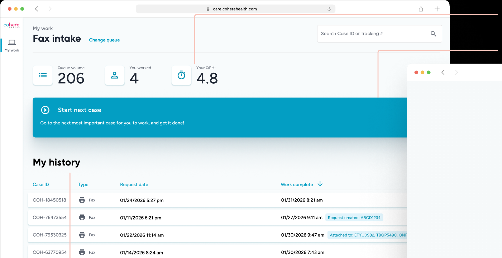
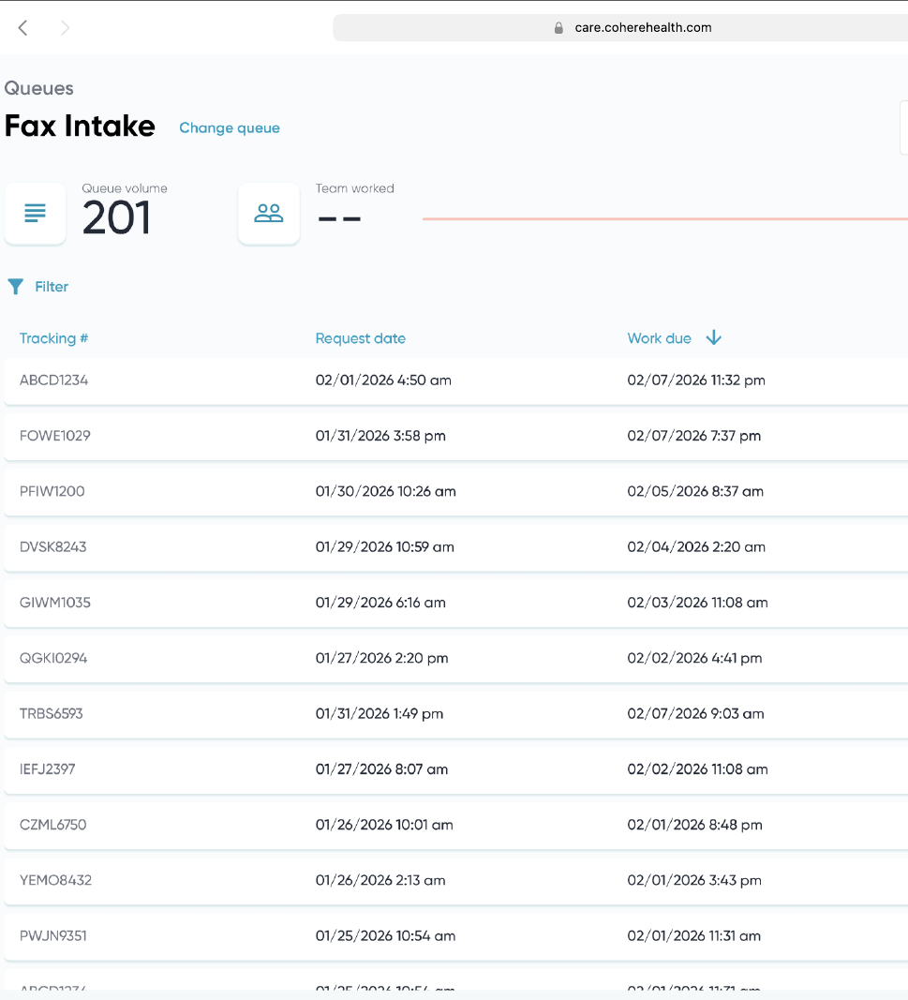
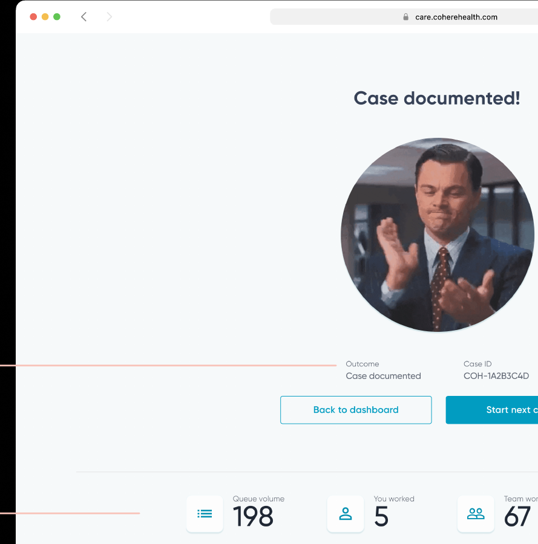
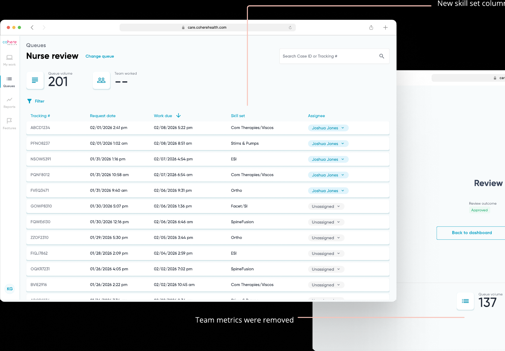
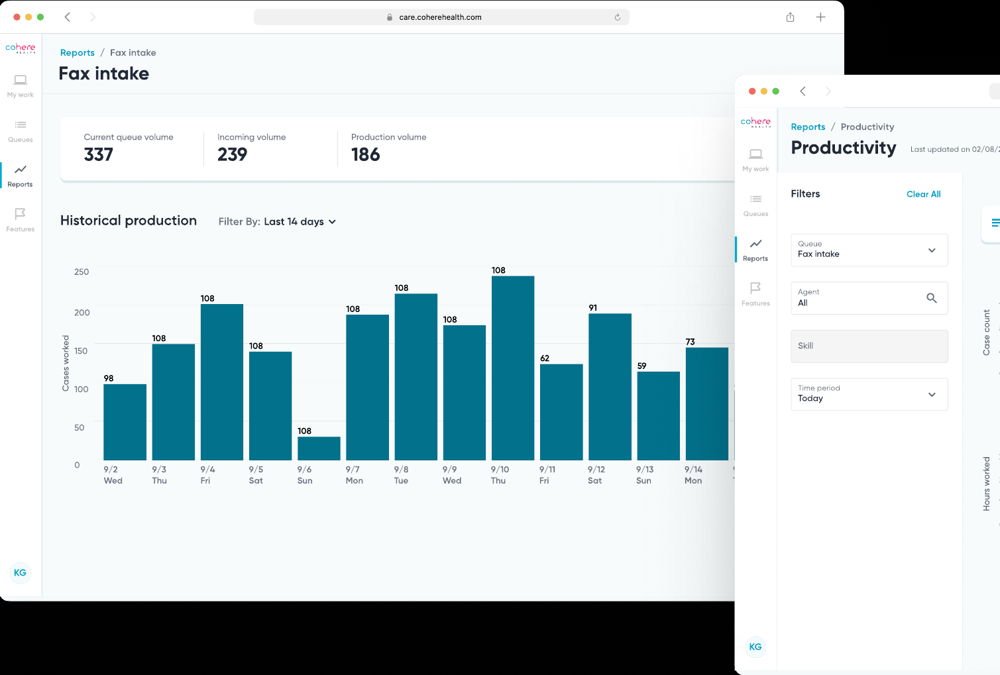

I designed a workforce management tool that gave ops teams at Cohere Health automation, visibility, and control over their daily workload, replacing a $1,600-per-seat Salesforce instance with something built natively into the product. It scaled from a single team to 15+ queues across the company and saved $320k a year in licensing costs.
The problem
Cohere Health processes prior authorizations, the approvals physicians need from insurers before treating a patient. Insurers use prior auth to control costs, but 93% of physicians report it delays care and 94% say it hurts patient outcomes. Every day, 6,000+ submissions moved through three manual stages: fax intake, clinical review, and denial letter writing.
Our ops team ran all of it through Salesforce, which meant heavy customization for every queue, constant app-switching since it wasn't native to our product, no real-time reporting, and a bill of $1,600 per license across 250+ users.
Research
I combined desk research and competitive analysis with interviews with intake specialists to understand how work actually moved through the queue, then narrowed scope to fax intake as the starting point, since it was the highest-volume, most repetitive stage and the clearest proof of concept.
How might we create a native, less manual queue management experience for intake specialists so they can process faxes more efficiently?
I set three goals against that question: intake specialists can quickly find the highest-priority case and reduce supervisor time spent on manual assignment to under 20%, user satisfaction passes 80% against Salesforce's baseline of 47%, and the system can scale from one queue to many within three months.
1. Everything Salesforce does, but better
Two problems stood out early. Intake specialists didn't always know which case to prioritize, which meant missed turnaround times, a real compliance risk with direct revenue consequences. And supervisors spent nearly 75% of their time manually assigning cases instead of coaching their teams.
I explored a handful of directions before converging on a solution: a case preview card for quick assignment decisions, a personal queue that auto-assigned cases each morning, a side-by-side view of queue volume against team capacity, and a "case galaxy" concept with a single button that fetched the highest-priority case automatically. That last one started as a deliberate push-the-limit idea, more ambitious than what I expected to ship, but it ended up shaping the final design more than any of the safer options.

Intake specialist view: efficiency metrics up top, one unmissable action to start the next case, full history built in.
The supervisor view took a different shape entirely, built around visibility and oversight rather than single-case focus: real-time queue and team metrics, full search across every case, and red "Unassigned" chips that flag exactly where a supervisor's attention is needed.

Supervisor view: every case in the queue, searchable, with the information supervisors need to assign work without leaving the page.
2. Agents feel accomplished when they finish a fax
In user interviews, one thing came up again and again: intake specialists stayed engaged when they felt a sense of accomplishment after finishing a case. My PM initially called this a nice-to-have, secondary to the functional requirements, and asked me not to spend design time on it.
I pushed back with two things instead of just an opinion. First, our baseline survey showed only 47% of intake staff rated Salesforce a 4 or 5 out of 5, against an 80% target we'd already set for the redesign, so satisfaction wasn't a soft metric here, it was a named goal. Second, "inject joy into healthcare" was already one of Cohere's stated design principles, which meant this wasn't a scope add-on, it was the product strategy applied literally.
That reframe turned into a "work complete" screen: a randomly selected GIF from a hand-picked library of 500+, paired with case outcome details for a clear sense of closure and updated queue and performance metrics so agents got real-time feedback on their pace.

The work complete screen: closure, a moment of delight, and an immediate path back into the queue.
94% of users rated QM a 4 or 5 out of 5 after launch. One intake specialist told us the screen made her feel good and that she liked the affirmation. Another said it felt like flow, that she'd never worked so fast.
3. Scale from 1 to 2, then to many
Four months after launch, fax intake alone drove a 45% increase in cases worked per hour. The next question was how far the same model could stretch.
Clinical review turned out to need a different definition of "good work" than fax intake did. Intake specialists optimize for speed and volume, follow strict rules, and treat every fax the same. Clinical reviewers optimize for accuracy, define their own workflows case by case, and are guided by clinical judgment rather than a metric. I translated that into two different versions of joy: fax intake work is about momentum and light delight, nurse review work is about confidence and clarity. The celebratory GIFs that worked so well for fax intake didn't fit a clinical context, so they came out of the nurse review version, along with team-level metrics that added noise rather than useful signal for that audience.

Clinical review queue: same underlying system, tuned for a different kind of work and a different definition of success.
To get past designing for just two personas, I built a configuration tool that let the team stand up new queues without custom engineering for each one. That system is what let Queue Management expand to 15+ queues across the company.
The last major gap was reporting. Because Salesforce lived outside our product, ops leaders had no real-time visibility into volume or team performance, which slowed decisions that depended on that data. I designed Cohere's first data visualization product to close that gap, breaking the work down by user story and validating the visual approach before building it out in full.

In-app reporting: the visibility ops leaders lost when Salesforce sat outside the product, rebuilt natively.
Impact
Takeaways
The biggest lesson from this project was that influence comes from pairing user insight with business context, and then communicating both in a way stakeholders can actually act on. Getting the "work complete" screen built took data, not just a design opinion. I also learned to scale through configuration instead of one-off customization: building the queue config tool early meant the system could grow to 15+ queues without engineering rebuilding it from scratch every time. Both of those are habits I now build into every 0 to 1 project from the start.